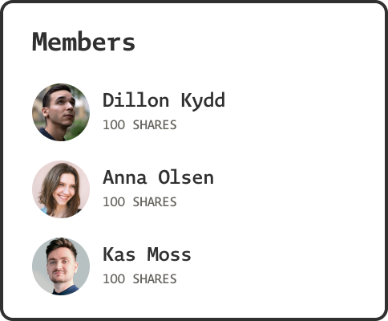
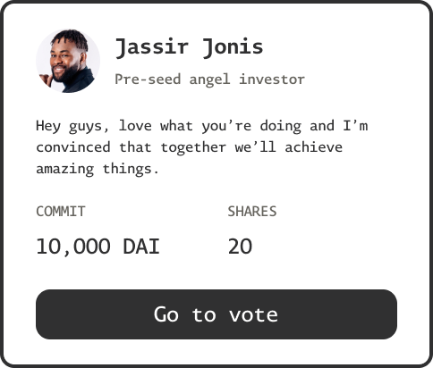
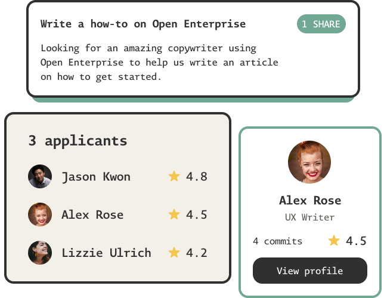

A new model for open collaboration Run an organization where members get rewarded for their contributions with fractional ownership.
Reimagining what it means to work
Teams and communities using Open Enterprise fundamentally unlock a reality of work that reimagines how people engage in economic opportunity, meeting the demands and expectations of a modern organization.
Modern workforceMultistakeholder governance aligns employees with the organization’s wider community.
Meritocratic by designTokenized ownership aligns deeply committed individuals with the organization’s success.
Engineered for resilienceOpen Enterprise supports best practices in sociocratic management.
Kickstart an organization with your co-foundersIt’s the early days, you just had a long conversation with two friends about a meaningful challenge that you’re all passionate about and have a potential solution for. You’re ready to embark the startup journey.

Onboard users, investors and advisors as you growYou’ve bootstrapped and delivered an MVP, and some investors and advisors are interested in having a chat with you. As an Open Enterprise, you can onboard them seamlessly into your digital organization and align them with your success.

Engage highly committed contributorsIt’s the You need talented people on-demand across various tasks that your full-time workforce can’t prioritize at the moment. As an Open Enterprise, you can easily fund tasks and have people apply to work on them in return for funds or shares.

Help us improve Open Enterprise
As an Open Enterprise ourselves, we are actively looking for new talent to join our mission of improving and delivering the Open Enterprise model to the world. Apply for open tasks and earn a stake in our success.
Ideate a list of features based on the Sociocracy modelWe’re looking for someone interested in business theory and research that’ll help us bridge the gap between our s...
Apply by May 15
Update documentation with FAQsReview our community chat for the most frequently asked questions and document answers for our product docs.
Apply by May 18
Tutorial video seriesCreate a series of video tutorials that cover everything from start to finish on using Open Enterprise.
Apply by May 20
Start an Open EnterpriseIf you can’t wait to run a new or existing organization on Open Enterprise and are willing to explore and navigate the beta, we’d love to get you started.